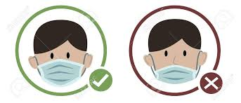
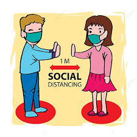

Few people would want to catch COVID-19, regardless of their age or general health. Even though younger people are less likely to need hospital treatment or die from the disease, some do. They’re also at greater risk of post-COVID syndrome or so-called “Long Covid” – a poorly understood condition that affects around one in seven under 65s in the six months after becoming infected with coronavirus. As the pandemic continues, there’s a good chance that someone in your household may become infected at some point – even if cases in your country are currently low. Although within-household transmission of the virus is very common, it is not inevitable, so it is worth trying to reduce the risk of others becoming sick. Some people with COVID-19 will develop a runny nose and many develop a dry cough. Any used tissues should immediately go into the dustbin, because the virus can survive on surfaces for many hours.
 